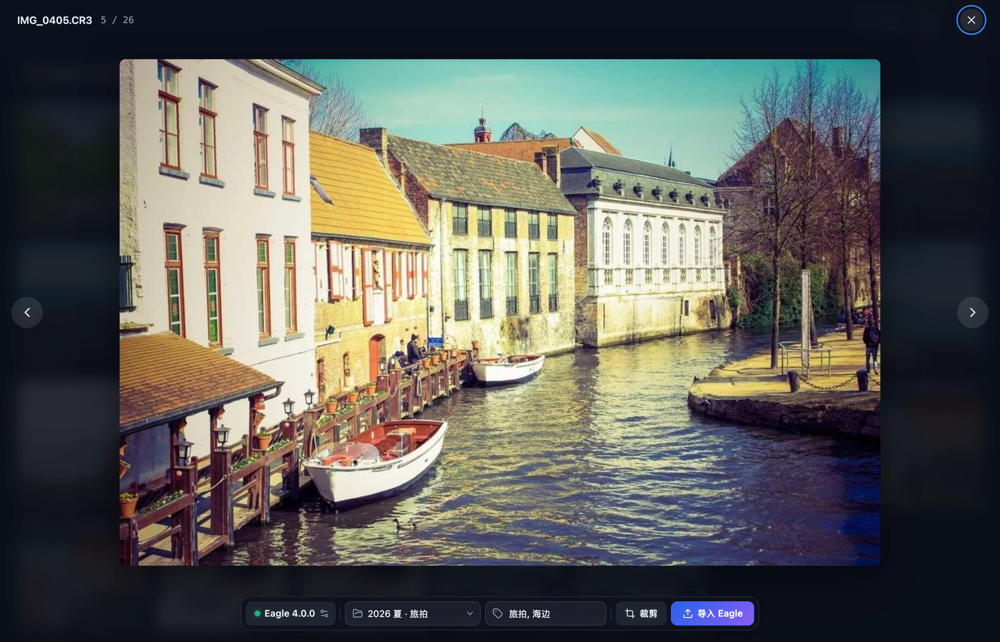
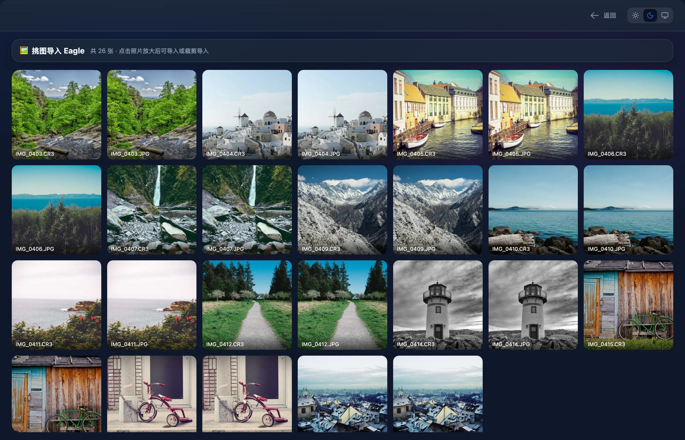

放大看 RAW，挑好直接送进 Eagle
备份完或联机拍摄时，把照片放大逐张看。RAW 和 HEIC 也能转成预览，选好 Eagle 文件夹、填上标签，一键导入原图。只要画面的一部分时，框选裁剪，结果直接推给 Eagle。整个过程中，大师拷贝不在存储卡和备份目录里写任何文件。

从哪里开始挑图
挑图有三个入口。前两个在备份流程里，收在 ⋯ 菜单中，打开一整页挑图网格；第三个在联机拍摄的照片流里，点一张照片直接放大。三个入口最后都进到同一个灯箱，导入和裁剪的用法完全一样。
| 入口 | 挑哪些照片 | 读哪一份文件 | 看完回到 |
|---|---|---|---|
| 扫描结果页 ⋯ 菜单里的挑图导入 Eagle | 当前日期筛选和后缀筛选下的全部照片 | 备份位置里已经有的（将跳过的，或本次已拷完、已跳过的）读备份副本；其余读存储卡上的原件 | 扫描结果 |
| 备份完成弹窗 ⋯ 菜单里的挑图导入 Eagle | 本次上传完成的照片，加上备份位置里本来就有、这次跳过的照片 | 全部读备份目录里的副本 | 配置页 |
| 联机拍摄的照片流 | 已入库 和 已存在 的照片 | 备份目录里的副本 | 照片流 |
只有照片进挑图：JPG、JPEG、PNG、HEIC、HIF，以及 NEF、CR2、CR3、ARW、DNG 这几种 RAW。视频不出现在网格里。当前范围里一张照片都没有时，菜单项是灰的，说明文字换成原因，例如当前列表里没有照片。菜单项右边的数字就是能挑的照片数。
结果页的挑图范围跟随上方的日期筛选和后缀筛选。同时拍了 RAW 和 JPG 时，在后缀里只留 CR3，网格里同一个画面就不会出现两次。状态条上的 将上传 将覆盖 将跳过 只过滤表格，不影响挑图范围。

挑图网格
网格页顶部写着🖼️ 挑图导入 Eagle，旁边是张数和一句提示，例如共 26 张 · 点击照片放大后可导入或裁剪导入。下面是全部照片的方格，点任意一格打开灯箱。

- 排列正方形格子，每格至少 168 像素宽，列数跟着窗口宽度变。照片居中填满格子，文件名压在底部。
- 缩略图格子滚动到可视范围附近才开始生成，长边 512 像素。用 macOS 自带的
sips转成 JPEG：转换结果先写到系统临时目录，读进内存后立即删除，不留缩略图缓存。 - 占位缩略图出来之前，格子里显示后缀标签（CR3、JPG 等）和转圈。生成失败时显示 ⚠️，格子仍然可以点开。
- 徽标右上角的✂ 2表示这张已经裁剪导入过 2 次，已导入表示原图已经导入 Eagle。
- 返回窗口右上角的返回回到进来的地方：从结果页进来回结果页，从完成弹窗进来回配置页。
- 空列表没有照片时显示🫥 没有可挑选的照片。
- 并发缩略图、大图预览和裁剪共用 4 个处理名额。照片再多，同一时刻最多转 4 张。
灯箱与 RAW 预览
点一格照片打开灯箱。灯箱铺满整个窗口，背后的页面变暗，不能操作。顶部左边是文件名和序号；导入过或裁剪过的照片，旁边跟着已导入和✂ N徽标。右上角是关闭按钮。两侧的箭头翻上一张、下一张，到第一张或最后一张时，对应的箭头变灰。
| 格式 | 预览怎么来 | 预览尺寸 |
|---|---|---|
| JPG、JPEG、PNG | 直接显示原文件 | 原图尺寸 |
| HEIC 与各家 RAW | 用 macOS 自带的 sips 转成 JPEG；临时文件读进内存后立即删除，不留缓存 | 长边 2560 像素 |
转码要花一点时间，这期间照片位置显示加载预览…。翻得快时，前面没转完的照片不会突然跳出来，屏幕上始终是你停下的那一张。最近转过的 12 张预览留在内存里，翻回去立刻显示；离开挑图页时，这些预览全部释放。
转码失败时，照片位置显示失败原因。这时裁剪按钮不可用，原图仍然可以导入 Eagle。
从联机照片流打开的灯箱跟着会话实时更新。新照片入库后，序号里的总数随之增加。翻页顺序和照片流一致，最新的在前。点清空记录后，正在看的照片不在列表里了，灯箱自动关闭。
关闭灯箱有三种方式：点右上角的 ×，按 Esc，或者在浏览时点照片外的空白处。灯箱打开期间，Tab 只在灯箱里的控件之间循环。
连接 Eagle
导入要用到 Eagle 的本地 API。先打开 Eagle，让它保持运行；大师拷贝不会替你启动 Eagle。
大师拷贝启动时不去连 Eagle。第一次打开灯箱时才连接：先读 Eagle 的版本号，再读资源库的文件夹列表，两步都成功才算连上。连接状态显示在底部工具栏最左边的按钮上。
| 状态按钮 | 含义 |
|---|---|
| Eagle 4.0.0 | 已连上，前面亮绿点，后面是 Eagle 报告的版本号 |
| 连接中… | 正在连接 |
| 未连接 Eagle | 还没连，或者连接失败。鼠标停在按钮上能看到失败原因 |
点状态按钮，工具栏上方展开一行连接设置；再点一次收起。连接失败时这一行自动展开，并在下方显示错误信息。
- API 地址默认
http://localhost:41595，即 Eagle 本地 API 的默认端口。留空时按这个地址连，末尾多余的斜杠自动去掉。 - API Token输入框的提示写着「Eagle → 偏好设置 → 开发者」，令牌在那里复制。输入框按密码显示，不露明文。留空时，请求里不带令牌。
- 重新连接改完地址或令牌后点它。连接期间按钮显示连接中…，不能重复点。
地址和令牌在输入框失去焦点或按 Enter 时存进配置文件，下次启动还在。改动任何一项，状态都会回到未连接 Eagle，文件夹列表清空。点重新连接立即用新设置连；不点的话，翻到下一张或重新打开灯箱时也会自动连。连接失败后不会自动重试，改好设置再点重新连接。
第一次设置
- 打开 Eagle，保持运行。
- 在 Eagle 的偏好设置里找到开发者相关的设置，复制 API Token。具体位置以你安装的 Eagle 版本为准。
- 在大师拷贝里打开任意一张照片的灯箱。状态显示未连接 Eagle时，连接设置会自动展开。
- 填好 API 地址和 Token，点重新连接。Eagle 装在本机时，地址用默认值即可。
- 状态按钮变成 Eagle 加版本号，文件夹下拉框可以选了，就算连好。
连不上时看提示
| 提示 | 说明 |
|---|---|
| 无法连接 Eagle（请确认 Eagle 已启动） | 请求没送到 Eagle。常见原因：Eagle 没开，地址或端口填错，地址写成了 https://。等待超时也显示这条 |
| Eagle 返回 HTTP 加状态码 | 请求到了对方，对方用 HTTP 错误码拒绝 |
| 解析 Eagle 响应失败 | 这个地址上有服务回应，但回应的内容无法按 Eagle 的格式解读 |
| Eagle 返回错误，或 Eagle 自己的说明 | Eagle 收到请求但处理失败。大师拷贝照录 Eagle 的说明，其中的令牌显示为 [已隐藏] |
导入原图
连上之后，底部工具栏的文件夹和标签才能用。选好它们，点导入 Eagle，这张照片的原图就进了 Eagle。
- 目标文件夹下拉框第一项是不指定文件夹，这时大师拷贝不给 Eagle 传文件夹。下面是 Eagle 资源库里的整棵文件夹树，子文件夹用缩进表示层级。没连上时下拉框是灰的。
- 记住文件夹导入成功后，这次用的文件夹写进配置文件。下次连上时自动选中它；如果 Eagle 里已经删了这个文件夹，就回到不指定文件夹。只在下拉框里换了选择、还没导入，不会存盘，但本次运行期间一直保留。
- 标签多个标签用英文逗号、中文逗号、顿号或空格隔开，重复的自动合并，空的忽略。输入「旅拍，海边、旅拍」得到「旅拍」「海边」两个标签。
- 标签保留多久标签框的内容在本次运行里一直保留，翻页、关掉灯箱再打开都还在，但不写进配置文件。
点导入 Eagle时，大师拷贝把这张照片的完整路径交给 Eagle，由 Eagle 把文件复制进资源库。原文件原地不动。导入名称是去掉后缀的文件名，IMG_0405.CR3 在 Eagle 里叫 IMG_0405。RAW 按原格式交过去，在 Eagle 里怎么显示由 Eagle 决定。
| 按钮 | 什么时候 |
|---|---|
| 导入 Eagle | 已连上，这张原图还没导入过 |
| 导入中… | 正在导入，按钮暂时不能点 |
| 已导入 | 这张原图已经导入成功。按钮变灰，同一个连接下不会重复导入 |
| 灰色的导入 Eagle | 还没连上 Eagle。鼠标停上去提示未连接 Eagle |
导入成功后，照片上方浮出提示已导入到 Eagle「2026 夏 · 旅拍」；没选文件夹时只显示已导入到 Eagle。失败时显示导入失败:加上原因。提示几秒后自动消失。
导入在后台进行。点完可以直接翻到下一张，结果照样记在原来那张上；提示只在你还停在那张照片时出现。
框选裁剪
只要画面的一部分时，点裁剪或按 Enter 进入裁剪。选区外的部分压暗，选区里画出三分线，四角和四边中点各有一个拖拽柄，选区下方实时显示尺寸。裁剪期间，两侧翻页箭头和连接设置收起，底部工具栏换成比例、导入名称、取消和裁剪并导入。

刚进入裁剪时，比例停在自由，选区是画面正中最大的正方形。点其他比例，选区换成该比例下居中的最大框。从别的比例点回自由，选区铺满整张图。
| 比例 | 选区 |
|---|---|
| 自由 | 宽高随意。刚进入裁剪时给出 1:1 最大框，从别的比例切回来时铺满整张图 |
| 1:1 | 正方形 |
| 4:3 | 宽 4 高 3 |
| 3:2 | 宽 3 高 2，和多数单反、无反相机的原生画幅相同 |
| 16:9 | 宽 16 高 9，宽屏 |
用鼠标调整选区
| 操作 | 效果 |
|---|---|
| 拖选区内部 | 平移选区，不会移出照片 |
| 拖四个角 | 对角不动，缩放选区。自由模式下也按拖动开始时的形状等比缩放 |
| 拖四边中点 | 对边不动。自由模式只改宽或只改高；固定比例时另一边跟着变，并以原来的中线居中 |
| 在照片上、选区外按下拖动 | 从按下的位置重新画一个选区。固定比例下仍按比例 |
| 松手时选区太小 | 任一边在屏幕上短于 24 像素，选区复位成当前比例下居中的最大框，自由模式复位成 1:1 最大框 |
选区下方的尺寸按像素计算。JPG、PNG 的预览就是原图，数字就是导出后的实际尺寸。RAW、HEIC 的预览是缩小过的，数字前面带 ≈，按预览图计算，只反映选区的形状和相对大小；真正导出按全分辨率原图裁，完成提示里给出实际像素。
导入名称默认是去掉后缀的文件名，可以改成任何名字；清空后按默认名导入。标签和目标文件夹沿用工具栏里的设置，进入裁剪前选好即可。
点取消或按 Esc 回到浏览，选区不保留。没连上 Eagle 时，裁剪并导入是灰的。
裁剪在内存里完成
点裁剪并导入后，大师拷贝按下面的顺序处理。整个过程不在存储卡和备份目录里写文件，也不在别处留下裁剪结果。
- 取全分辨率原图。JPG、PNG 直接读原文件；RAW、HEIC 用
sips转成全尺寸 JPEG（质量 95），中间文件在系统临时目录里读完即删。 - 按照片 EXIF 里的方向信息把图转正，保证裁出来的就是屏幕上框住的那一块。
- 在内存里按选区裁剪，编码成 JPEG（质量 92）。
- 把这张 JPEG 直接交给 Eagle，带上导入名称、标签和目标文件夹，备注写「裁剪自」加原文件的完整路径。
- 成功后提示已导入裁剪图 3840×2560这样的实际像素，照片的 ✂ 计数加一，回到浏览状态。
- 多次裁剪同一张照片可以裁很多次，每次都在 Eagle 里新建一张。原图的已导入状态不影响裁剪。
- 不重复转码最近一次用过的全分辨率原图留在内存里，连续裁同一张 RAW 时不用重新转码。文件大小或修改时间变了，就重新读取。
- 输出格式裁剪结果一律是 JPEG。PNG 的透明区域不保留。
- 最小尺寸裁出来的宽或高不足 4 像素时，提示裁剪区域过小。
- 失败重试失败时显示导入失败:加原因，停在裁剪状态，选区还在，可以直接再点一次。
- 边裁边等裁剪导入进行中，比例、名称和选区都锁住，按钮显示导入中…；浏览时的裁剪按钮显示裁剪导入中…，等这一张完成才能再裁。
已导入与裁剪标记
大师拷贝在本次运行里记住你对每张照片做过什么，在三个地方显示：
| 位置 | 原图已导入 | 裁剪导入过 |
|---|---|---|
| 挑图网格，格子右上角 | 已导入 | ✂ N |
| 灯箱顶部，文件名旁 | 对勾加已导入 | 剪刀加次数 |
| 联机照片流，卡片状态行 | ✓ Eagle | ✂ N |
- 只在内存标记不写文件，退出大师拷贝后清空。
- 跟着连接走标记按 API 地址加令牌分开记。换了地址或令牌，界面只显示新连接下的标记；本次运行内换回原来的连接，原来的标记会回来。
- 按文件认同一个文件从哪个入口打开，标记都一样。存储卡上的原件和备份目录里的副本是两个文件，各记各的。
快捷键
灯箱和裁剪都能只用键盘操作。表里的 Option 在部分键盘上标作 Alt。
| 按键 | 场景 | 作用 |
|---|---|---|
| ← → | 浏览照片 | 上一张、下一张，到头停住 |
| Enter | 浏览照片 | 进入裁剪 |
| Esc | 浏览照片 | 关闭灯箱 |
| Enter | 裁剪中 | 裁剪并导入 |
| Esc | 裁剪中 | 取消裁剪，回到浏览 |
| 方向键 | 选区获得焦点 | 移动选区，每次移动照片宽或高的 1% |
| Option + 方向键 | 选区获得焦点 | 移动选区，每次 5% |
| Shift + 方向键 | 选区获得焦点 | 调整大小，每次 1%：→ ↓ 放大，← ↑ 缩小，左上角不动 |
| Shift + Option + 方向键 | 选区获得焦点 | 调整大小，每次 5% |
| Tab / Shift + Tab | 灯箱打开时 | 在灯箱里的控件之间前后切换，到头绕回 |
进入裁剪后，按 Tab 把焦点移到选区上，才能用方向键微调。选区最小缩到照片宽或高的 2%。固定比例下用 Shift 调大小，另一边按比例跟着变，碰到照片边缘时整体收缩到边界内。
焦点在标签框、导入名称或文件夹下拉框里时，方向键和 Enter 交给这个控件处理，不会翻页、进入裁剪或触发导入。在标签框里打字时按方向键，只会移动光标。焦点在按钮上时，Enter 按下这个按钮，方向键照常翻页。Esc 不受影响，随时可以退出裁剪或关闭灯箱。
令牌与连接安全
API Token 是访问 Eagle 本地 API 的凭据。大师拷贝按敏感信息处理它：
- 输入Token 输入框按密码显示，屏幕上看不到明文。
- 保存和其他设置一起存在
~/Library/Application Support/com.mascopy.mascopy/config.json。这个文件只有你自己的账户能读写。 - 发送按 Eagle 本地 API 的约定，令牌放在请求地址的
token参数里，特殊字符先转义。请求由大师拷贝的后台发出，界面本身不直接联网。 - 报错脱敏连不上时，错误信息只说明是哪一类网络问题，不带完整的请求地址。Eagle 返回的说明里如果出现令牌，原文和转义后的写法都替换成
[已隐藏]。 - 只支持 http大师拷贝连 Eagle 只走 http，没有内置 https。API 地址填
https://开头的会连接失败。
配置文件的权限与写入方式，见可靠性与隐私。
Eagle 兼容说明
Eagle 是第三方软件。大师拷贝只通过 Eagle 的本地 API 与它通信，不直接读写 Eagle 资源库里的文件。下表列出用到的全部接口，地址都在 API 地址后面加 /api/：
| 用途 | 接口 | 方式 | 最长等待 |
|---|---|---|---|
| 读版本号 | application/info | GET | 6 秒 |
| 读文件夹树 | folder/list | GET | 6 秒 |
| 导入原图 | item/addFromPath | POST，传文件路径 | 30 秒 |
| 导入裁剪图 | item/addFromURL | POST，传 JPEG 的 data URL | 30 秒 |
- 运行要求Eagle 要在运行，本地 API 要能访问。大师拷贝不会启动 Eagle。
- 版本状态按钮里的版本号取自 Eagle 自己的回报。大师拷贝不检查版本号。
- 原图靠路径导入原图传给 Eagle 的是本机文件路径，Eagle 必须在它所在的电脑上读得到这个路径。
- 裁剪图靠内容裁剪图整张随请求发过去，不依赖任何路径。
- 界面名称本页提到的 Eagle 菜单和设置位置，以你安装的 Eagle 版本为准。